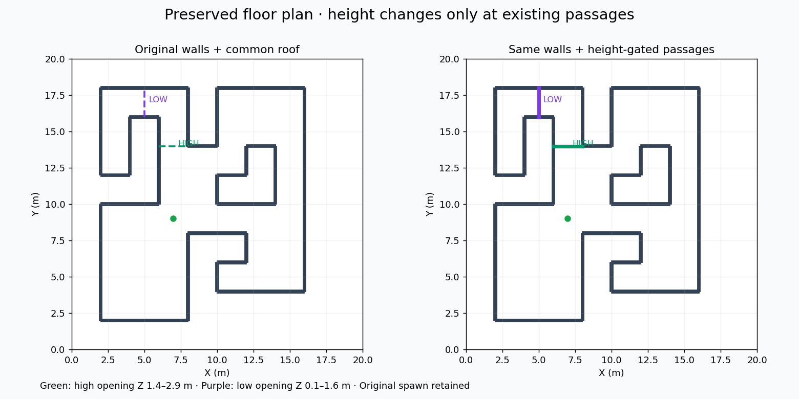

Original floor plan. Height-restricted passages.
Map 22 from the original 32-map set · old lattice model_499 · seed 42 · no retraining or scripted actions
What changed
Every original wall and the original spawn were preserved. Two existing narrow passages received sill/lintel slabs: one high opening and one low opening. Both comparison variants have the same added roof, so the height gates are the only geometric difference between them.

| Passage | Position in local map | Allowed height |
|---|
| High | Y = 14 m, X = 6–8 m | Z = 1.4–2.9 m |
| Low | X = 5 m, Y = 16–18 m | Z = 0.1–1.6 m |
Both passages are nominally 2 m wide; existing wall thickness reduces the clear width. Geometric tests with a 0.25 m margin find a connected 3D route, no constant-height route to the far pocket, and no bypass around either gate.
Measured old-policy replays
The learned policy autonomously crossed both height gates and reached the far pocket in this run. No manual waypoints were used.

Orange: measured flight path. Blue: observed geometry. Gray: full-layout context. The physical roof is hidden in the 3D view. The altitude plot uses the measured path, not a planned trajectory.
Download this GIF
Why the earlier three-room run could stop early
The current stopping rule uses zero graph utility or missing guideposts; it does not verify exploration of every room. A replay of the saved 31-decision terminal observation reproduced an empty useful planning graph even though unexplored frontiers remained.
- Fresh reconstruction sampled 150 candidate nodes, then retained 83 after graph connectivity processing.
- Five useful candidates existed beyond the first gate, with up to 40 visible frontiers, but no retained graph nodes were beyond that gate.
- Utility and guideposts became empty and the stopping rule fired.
This reconstruction starts with a fresh graph; it is not the exact historical graph state. A separate diagnostic rerun of the same synthetic scene crossed both gates, so the earlier failed rollout does not establish that the old policy can never pass. Evidence points to graph connectivity and stopping robustness, alongside control-clearance sensitivity; a complete causal diagnosis remains open.